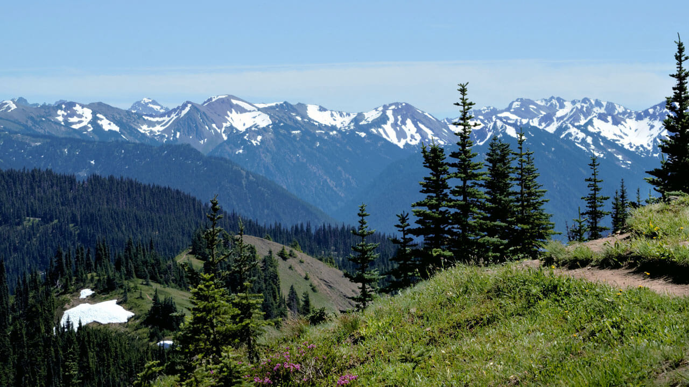
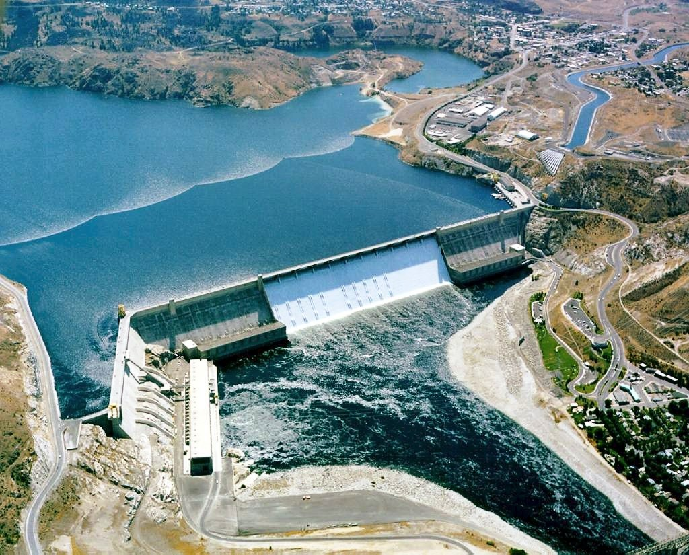

Suggestions
Upload and view popular suggestions on trips by our users
Olympic National Park
This is the most popular trip location in Washington State, as well as one of the most popular national parks in the United States. Users enjoy this location for its views and being a great location for camping and hiking. It is reported by our users people usually spend around 5 days at the park, and usually choose to camp there instead of finding an accomadation in a nearby town.
View trips by users at this location
Click the button below to view the trips by our users, including pictures and more specific detailes, such as prices and their type of cummute to the location.
Links for the park
Pike place market

This is another popular location in Washington State. Located in the West of Seattle, there is more to do than just exploring the market. The market offers many shops and restaurants including seafood and other specialty dishes. Users report visiting the market for a day while staying at an accomadation in the city. There are many vendors directly outside of the market as well
View trips by users at this location
Click the button below to view the trips by our users, including pictures and more specific detailes, such as prices and their type of cummute to the location.
Links for the market
Grand Coulee Dam
This location is considered one of the biggest dams in Washington. Located towards the South of Washington, there are also some scenic mountains on the drive there. Users have reported taking a tour of the plant and visiting the free museum nearby. If you wait for the night time, there is sometimes a laser light show projected onto the walls of the dam. Users report visiting the dam for 1-2 days and staying at an acommadation at the nearby Coulee City.
View trips by users at this location
Click the button below to view the trips by our users, including pictures and more specific detailes, such as prices and their type of cummute to the location.